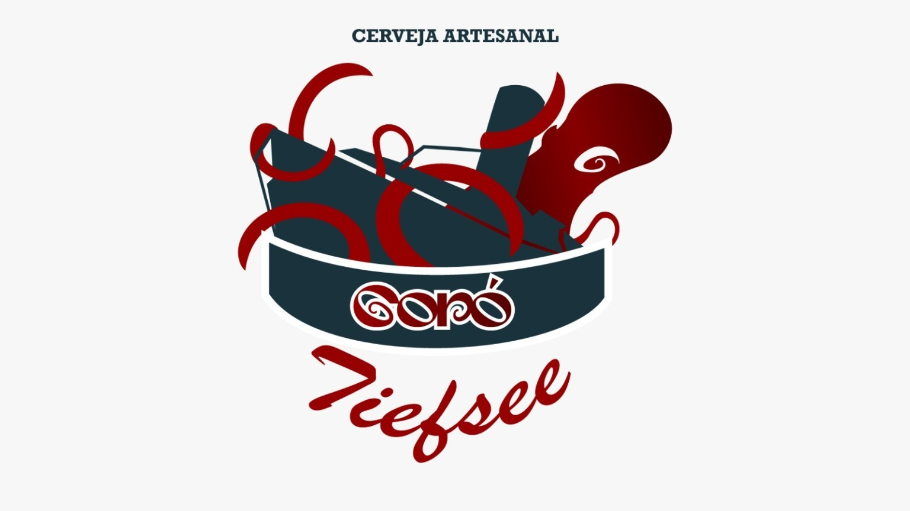
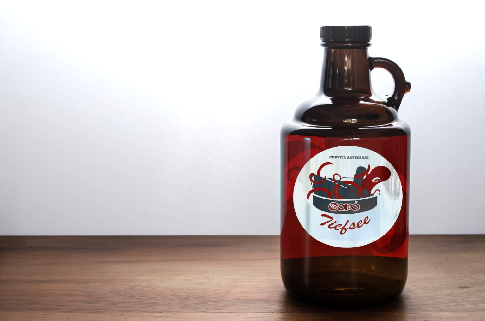
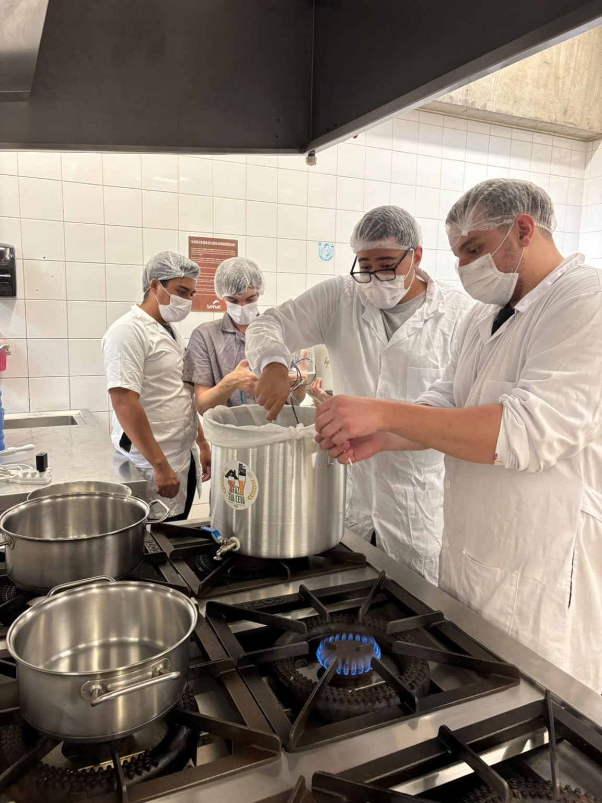
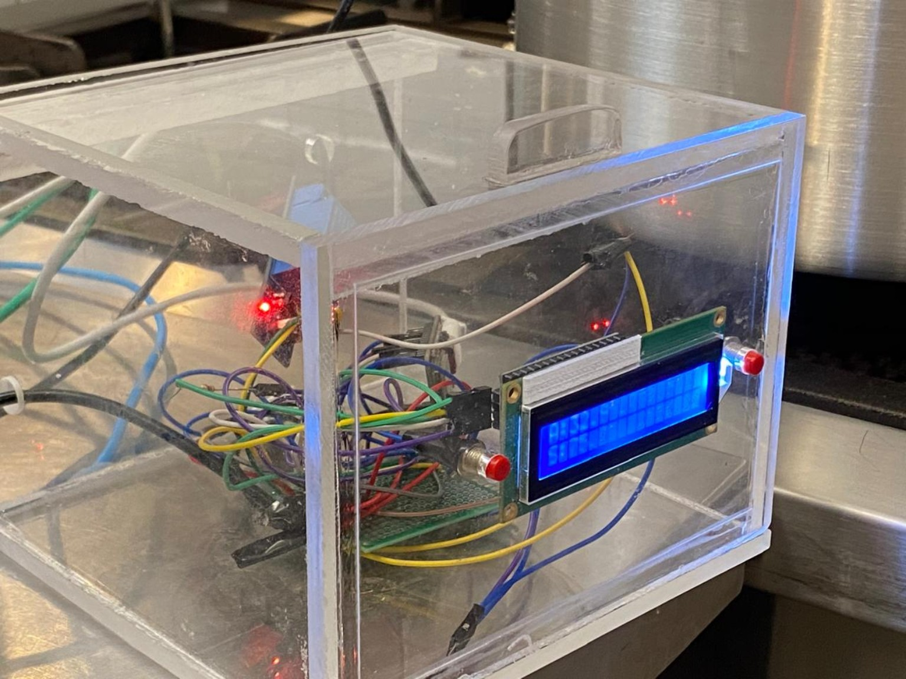

Tecnologia e tradição fermentando inovação.
Projeto desenvolvido no SENAC Santo Amaro pelos alunos de Engenharia da Computação, unindo automação e produção artesanal de cerveja.
Conheça o Projeto


Conheça a apresentação completa do projeto Goró Tiefsee, abordando a proposta, o desenvolvimento do sistema embarcado, o controle inteligente de temperatura e a produção da cerveja artesanal.
Assistir ao Vídeo Pitch